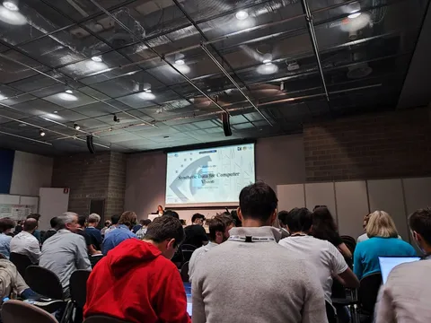

29 сентября в Милане стартовала конференция ECCV 2024, которая собрала ведущих специалистов в области компьютерного зрения — в том числе, и от Яндекса. Мы не могли обойти такое громкое событие стороной, и будем освещать его с самых разных сторон. Но прежде всего расскажем о самых интересных докладах первого дня мероприятия. К делу!
Synthetic to Authentic: Transferring Realism to 3D Face Renderings for Boosting Face Recognition
Авторы предлагают «механизм реалистичности», который позволяет сократить доменный сдвиг между реальными и синтетическими изображения людей. В итоге — более высокие результаты на исходной задаче по сравнению с обучением на синтетике и без преобразований. На некоторых бенчмарках использование такого механизма сравнимо даже с обучением на реальных данных.
DPA-Net: Structured 3D Abstraction from Sparse Views via Differentiable Primitive Assembly
Современные text-to-3D и image-to-3D-модели не очень хорошо понимают физику — они рисуют неправильные тени и формы объектов. Исследователи предлагают разные подходы к решению этой проблемы: например, использование диффузии и технологий рендера вроде NeRF или 3D Gaussian Splatting. Автор же представленной работы утверждает, что для понимания физики требуется строить сетку с 3D моделированием (противопоставление rendering и modeling) через примитивы.
Воркшоп Knowledge as Association
Дэвид Бау из Северо-Восточного университета предполагает, что модели содержат в себе две сущности. Первая — Knowledge — отражает знания. Они находятся в весах модели. Вторая — Memory — это то, что модель может вспомнить в процессе генерации при определённых входных данных. Memory содержится в активациях.
Доклады бережно отбирали
CV Time
#YaECCV
